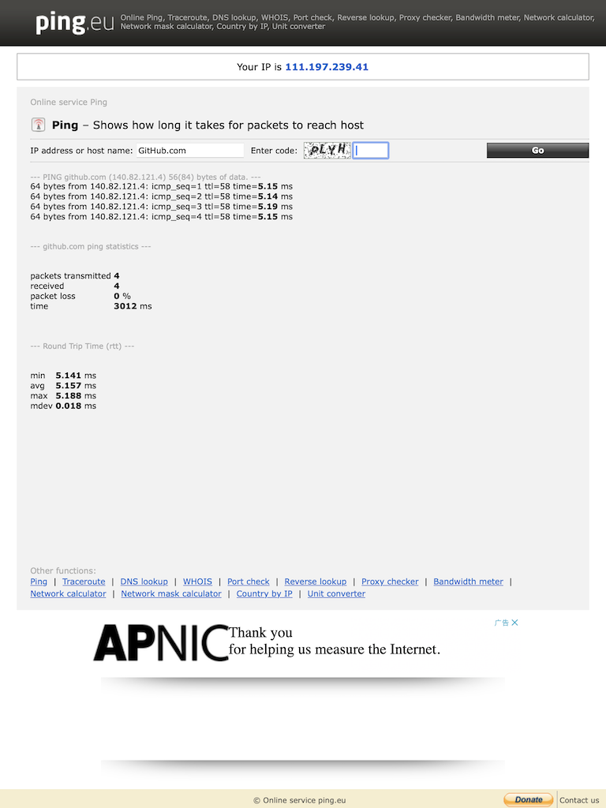

反馈请联系hertz@hertzwang.com,谢谢
未找到ARM框架的Ubuntu桌面系统，查找资料中在知乎看找到一篇文章醍醐灌顶，以下为个人记录，建议参考原文 Parallels Desktop 19 安装Ubuntu桌面版(m芯片arm架构)。
按照原文的思路，先安装适用于ARM的Ubuntu Server，再安装桌面环境和应用商店
笔记：
1 | $ sudo apt update |
反馈请联系hertz@hertzwang.com,谢谢
未找到ARM框架的Ubuntu桌面系统，查找资料中在知乎看找到一篇文章醍醐灌顶，以下为个人记录，建议参考原文 Parallels Desktop 19 安装Ubuntu桌面版(m芯片arm架构)。
按照原文的思路，先安装适用于ARM的Ubuntu Server，再安装桌面环境和应用商店
笔记：
1 | $ sudo apt update |
反馈请联系hertz@hertzwang.com,谢谢
IP address or host name: 中输入 github.com ，输入 Enter code 并点击 Go 之后可以得到一个IP$ sudo vi /etc/hosts，在底部添加 xxx.xx.xxx.xx github.com，保存退出（ESC - Shift + ; - wq - 回车）
反馈请联系hertz@hertzwang.com,谢谢
WebViewJavascriptBridge可用于iOS原生（以下简称原生）与JavaScript（以下简称JS）交互，集成和使用参考README.md
Bridge通过WebView初始化后加载网页，html首次加载时新建一个隐藏的iframe，通过设置scr来触发原生URL拦截从而达到注入JS的目的
原生注册方法供JS调用：JS调用时先将方法名和传参缓存（至sendMessageQueue），再更新iframe.scr触发原生URL拦截（-webView:decidePolicyForNavigationAction:decisionHandler:），原生调用JS方法（WebViewJavascriptBridge._fetchQueue();）获取方法名和传参，解析后从bridge.base.messageHandlers取出对应的Block然后执行
JS注册方法供原生调用：原生通过bridge可直接调用JS方法
MAC_10_9以上或设备为IPHONE_7_1及上中，使用WebViewJavascriptBridgeBase对象做为Bridge反馈请联系hertz@hertzwang.com,谢谢
创建实例:
调整安全组：
| 类型 | 协议 | 端口范围 | 源 |
|---|---|---|---|
| RDP | TCP | 3389 | 0.0.0.0/0 |
| HTTPS | TCP | 443 | 0.0.0.0/0 |
| 自定义TCP | TCP | 80 | 0.0.0.0/0 |
| 自定义TCP | TCP | 6612 | 0.0.0.0/0 |
| 自定义TCP | TCP | 8000 | 0.0.0.0/0 |
| 自定义TCP | TCP | 8191 | 0.0.0.0/0 |
| 自定义TCP | TCP | 8192 | 0.0.0.0/0 |
| 自定义TCP | TCP | 8388 | 0.0.0.0/0 |
| 自定义TCP | TCP | 9000 | 0.0.0.0/0 |
反馈请联系hertz@hertzwang.com,谢谢
用Python脚本来检查Mac联网状态，在达到条件后重启Mac
# -*- coding: utf-8 -*-
import os
import asyncio
import time
from enum import Enum
# 策略enum：1-重启电脑 2-启动网卡
class RunActionType(Enum):
reboot = 1
restart_net = 2
# root密码
root_pwd = ''
# 策略
run_action_type = RunActionType.restart_net.value
# 退出循环标记
allow_loop = True
# 时间间隔
tiem_sleep_interval = 3
# 失败次数
failed_count = 0
# 失败最大次数
failed_max_count = 2
# 终端命令
command_reboot = 'echo %s | sudo -S reboot' % root_pwd
command_network_down = 'echo %s | sudo -S ifconfig en0 down' % root_pwd
command_network_up = 'echo %s | sudo -S ifconfig en0 up' % root_pwd
# 检查网络状态
async def loop_ping():
global allow_loop, failed_count
while allow_loop:
result = os.system('curl baidu.com')
if result:
failed_count += 1
print(result)
else:
failed_count = 0
if failed_count >= failed_max_count:
allow_loop = False
failed_count = 0
run_action()
else:
time.sleep(tiem_sleep_interval)
# 策略
def run_action():
if run_action_type == RunActionType.reboot.value:
reboot_action()
elif run_action_type == RunActionType.restart_net.value:
restart_net_action()
# 启动电脑
def reboot_action():
print("启动电脑")
os.system(command_reboot)
# 启动网卡
def restart_net_action():
print("重启网卡")
os.system(command_network_down)
time.sleep(5)
os.system(command_network_up)
print("网卡重启结束")
if __name__ == '__main__':
print("开始监听网络连接")
loop = asyncio.get_event_loop()
loop.run_until_complete(loop_ping())
cd ~目录下自动操作.app->新建文稿->应用程序->选取，或者文件->新建->应用程序->选取shell,将运行Shell脚本拖动到右边的/bin/bashpythonBinPath pyFilePath，例如：/usr/bin/python3 ~/Script/reboot.pywhich python查看reboot.pyroot_pwdrun_action_type反馈请联系hertz@hertzwang.com,谢谢
Apple官方文档Model-View-Controller
Apple官方DemoMVCNetworking
MVC即Model-View-Controller，是一个复合设计模式，由于一些基本的设计模式组成，这些基本模式一直工作，定义功能分离和通信路径，将整体分为了三个角色Model、View、Controller各司其职
组合角色，例如Model Controller、View Controller
NSDocument自动处理与保存文件相关的操作NSWindowController在最初的概念（Smalltalk）中，由于组合模式、策略模式和观察者模式组成，View与Model有通信
用户在View上操作生成事件，Controller接收事件并根据策略处理事件，这个策略可以是更新Model或者更新View，当Model状态变化时通知View更新外观

反馈请联系hertz@hertzwang.com,谢谢
记录使用Xcode 13新建项目，Deployment iOS 13以下无法运行的处理方案
删除 Scene 相关
AppDelegate.swift/AppDelegate.m中的configurationForConnecting和didDiscardSceneSessions方法Application Scene Manifest反馈请联系hertz@hertzwang.com,谢谢
官方网址：http://appium.io
参考文章：
iOS自动化测试之Appium的安装和使用
Appium XCUITest 驱动在真机上的设置
Appium 遇到 Unable to launch WebDriverAgent because of xcodebuild failure: xcodebuild failed with code 65 的解决方法
xattr -cr Appium-Server-GUI-mac-x.xx.x.dmg 来处理无效文件问题codesign --deep --sign - /Applications/Appium\ Server\ GUI.app 来处理签名导致的js问题xattr -cr Appium-Inspector-mac-xxxx.x.x.dmg 来处理无效文件问题反馈请联系hertz@hertzwang.com,谢谢
源于 qcloud-sdk-ios 上的代码块描述，应用实例 Fast Code
.codesnippet结尾的xml文件，存放在~/Library/Developer/Xcode/UserData/CodeSnippets文件夹，完整示例如下：
1 | <?xml version="1.0" encoding="UTF-8"?> |
Xcode中可修改条目有七项，分别是Title、Summary、Content、Language、Platform、Completion和Availability，下载后文件与Xcode生成的文件做对比差异如下：